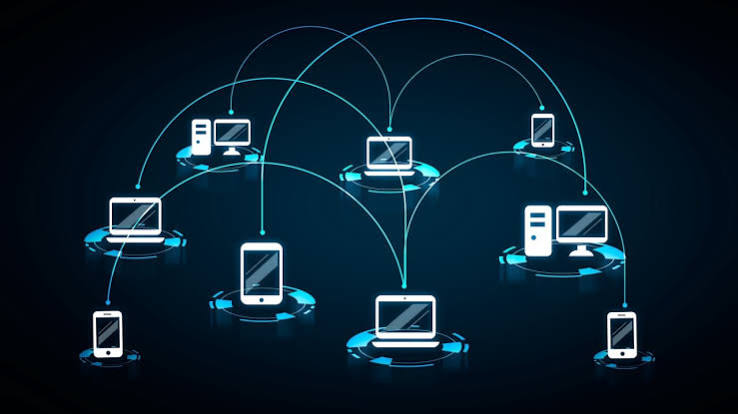

El episodio
Escucha el episodio que sirve como fuente principal para esta investigación sobre ciberguerra y seguridad digital.
¿Qué es la ciberguerra?
La ciberguerra comprende operaciones realizadas mediante sistemas informáticos y redes digitales con objetivos políticos, militares, económicos o estratégicos.
A diferencia de una guerra convencional, muchas de estas operaciones pueden desarrollarse sin que exista una declaración formal de guerra y sin que la población conozca inmediatamente quién está detrás del ataque.
"El espionaje no tiene amigos: los estados vigilan tanto a rivales como a aliados para asegurar ventajas estratégicas."
El caso Pegasus y el espionaje de Estado
Un teléfono convertido en objetivo
En mayo de 2021, los teléfonos celulares del presidente de España, Pedro Sánchez, y de la ministra de Defensa, Margarita Robles, fueron comprometidos mediante herramientas de espionaje sofisticadas.
Entre las tecnologías que llegaron al centro de la atención pública se encuentra Pegasus, desarrollado por la empresa israelí NSO Group.
El caso también demuestra uno de los problemas más complejos de la ciberseguridad: determinar quién se encuentra realmente detrás de un ataque.
La dificultad de atribuir un ataque
Analizar técnicamente un malware puede permitir conocer qué hace y cómo se comunica. Sin embargo, identificar con absoluta certeza al gobierno o agencia responsable requiere pruebas políticas y técnicas mucho más difíciles de obtener.
¿Por qué espían los Estados?
El espionaje puede utilizarse para obtener información estratégica, tecnológica, comercial y política. Incluso los países aliados pueden convertirse en objetivos cuando existe información que representa una ventaja económica o geopolítica.
La ciberguerra silenciosa y la Zona Gris
La llamada zona gris comprende acciones hostiles que aumentan la tensión entre Estados sin llegar necesariamente al nivel de una guerra convencional.
Entre estas acciones pueden encontrarse los ciberataques, las campañas de desinformación, los sabotajes y diferentes formas de presión política o social.
Los Wipers
Durante conflictos recientes se han observado herramientas conocidas como wipers. A diferencia del ransomware tradicional, cuyo objetivo suele ser obtener dinero, un wiper busca destruir o inutilizar información para provocar daños y desestabilización.
Desinformación y manipulación
Las campañas de desinformación pueden utilizar redes de cuentas automatizadas y grandes cantidades de dispositivos para amplificar determinados mensajes.
El objetivo puede ser aumentar la polarización, generar conflictos sociales, alterar la percepción pública o debilitar la cohesión de una sociedad.
Hackers, Exploits e Inteligencia Artificial
De One-Click a Zero-Click
Los ataques tradicionales muchas veces dependían de que el usuario cometiera una acción, como abrir un archivo malicioso o pulsar sobre un enlace.
Los ataques Zero-Click representan un escenario diferente: aprovechan vulnerabilidades que permiten comprometer un dispositivo sin requerir una interacción visible del usuario.
¿Qué es un Zero-Day?
Una vulnerabilidad Zero-Day es un fallo de seguridad que todavía no cuenta con una solución disponible o que es desconocido por el fabricante en el momento en que está siendo aprovechado.
La Inteligencia Artificial cambia el escenario
La Inteligencia Artificial puede acelerar la búsqueda y análisis de vulnerabilidades. Esto plantea nuevas preocupaciones porque algunas capacidades que antes requerían años de experiencia técnica pueden resultar más accesibles.
La principal preocupación no es solamente la potencia de estas herramientas, sino también la reducción de la barrera técnica necesaria para utilizarlas.
Seguridad Operacional (OPSEC)
Existen medidas sencillas que pueden reducir los riesgos comunes de seguridad digital.
01. Reinicia tu teléfono
Reiniciar periódicamente el dispositivo puede ayudar a eliminar determinadas amenazas que dependen de permanecer activas en la memoria.
02. Cuidado con las redes Wi-Fi públicas
Una red inalámbrica pública puede ser utilizada para engañar a los usuarios mediante redes falsas o portales fraudulentos. Evita introducir información sensible cuando no confíes en la red.
03. Evita modificar las protecciones del sistema
El Jailbreak y el Root pueden eliminar algunas barreras de seguridad incorporadas por los fabricantes y aumentar la exposición del dispositivo.
04. Protege tu red doméstica
Utiliza una red de invitados cuando sea posible y evita compartir innecesariamente la contraseña de tu red principal.
Galería: El mundo de la ciberguerra
Referencias visuales relacionadas con tecnología, redes, seguridad informática y espionaje digital.



Puntos clave
- Los Estados pueden utilizar el espionaje digital para conseguir ventajas estratégicas.
- La atribución de un ciberataque es uno de los problemas más difíciles de resolver.
- La guerra híbrida permite ejercer presión sin recurrir necesariamente a una guerra convencional.
- Los ataques Zero-Click pueden comprometer dispositivos sin interacción visible del usuario.
- La Inteligencia Artificial puede reducir la barrera técnica para desarrollar capacidades ofensivas.
- Las prácticas de OPSEC ayudan a disminuir riesgos cotidianos.
Conclusiones
La tecnología ha transformado profundamente la forma en que se desarrolla el conflicto entre Estados y también la manera en que los ciudadanos deben comprender su propia seguridad digital.
El espionaje no se limita a los enemigos declarados. Los gobiernos pueden vigilar a aliados y adversarios cuando buscan ventajas económicas, tecnológicas o políticas.
Al mismo tiempo, la guerra híbrida demuestra que una sociedad puede ser afectada mediante desinformación, sabotajes y ataques informáticos sin que exista una guerra convencional.
Finalmente, los ataques Zero-Click y la evolución de la Inteligencia Artificial muestran que el panorama de amenazas continúa cambiando. Frente a este escenario, mantener buenas prácticas de seguridad sigue siendo una de las herramientas más accesibles para protegerse.
Fuente principal
Este sitio fue elaborado a partir de la curaduría y síntesis del contenido proporcionado en el NotebookLM, tomando como fuente principal el episodio seleccionado de YouTube.
Episodio: Ciberguerra, espionaje y seguridad digital.
ID del video: vfMUclkcpCE